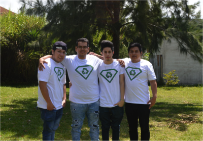
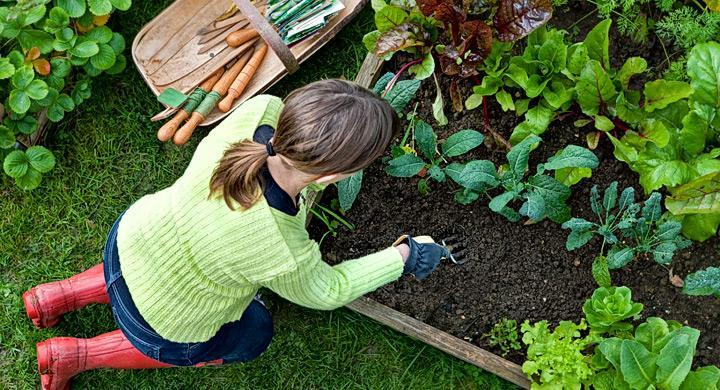

Fernanda Anticona Huaman
Tips para cuidar el medio ambiente:
Cada uno de nosotros, desde donde nos encontremos
podemos colaborar con la preservación y conservación
del medio ambiente y el incremento de nuestra calidad
de vida, a través de pequeñas acciones como:
○Aprovechar al máximo la luz. Los cambios de horario
nos ayudan también a conservar más energía. Además,
recuerda que se debe apagar la luz cuando no estemos
en una habitación.
○Ahorrando más agua. Con acciones como lavar el auto
con un balde con agua en vez de usar la manguera o
recolectar el agua fría de la regadera, reduciremos
su consumo.
Fernando Alvarez Gonzalo
Según la Organización Mundial de la Salud (OMS),
actualmente una de cada nueve muertes en el
mundo se debe a la contaminación del aire, una
circunstancia que se agrava en los grandes centros
urbanos del planeta.De hecho, este organismo
advierte que el rápido crecimiento de estos centros
urbanos, muchas veces sin la debida planificación ni la
medición del impacto medioambiental, afecta seriamente a
la salud de sus habitantes, provocando un aumento de problemas
cardiovasculares, varios tipos de cáncer o derrames cerebrales,
entre otros.
Fernanda Anticona Huaman
Hola,buenas tardes soy Matin y hoy le ensene a mi hijo a plantar arboles y la importancia de estosm para el medio ambiente

Fernando Alvarez Gonzalo
Hola,buenas tardes soy Matin y hoy le ensene a mi hijo a plantar arboles y la importancia de estosm para el medio ambiente

Fernanda Anticona Huaman
El voluntariado ambiental es un tipo de intercambio en proyectos
ecológicos que tienen como fundamento y objetivo la realización
de acciones de conservación y cuidado del medio ambiente.
Es una forma de voluntariado donde las personas participan en
actividades que persiguen disminuir el impacto negativo del ser
humano sobre el medio ambiente, y trabajar sobre el cuidado, la
preservación y conservación del planeta.
Estos proyectos pueden variar en su naturaleza y aspiraciones,
pero en el fondo comparten el respeto por la madre tierra y un
profundo cuidado de cada una de las acciones para generar un impacto
positivo sobre el entorno en el cual vivimos.
Fernando Alvarez Gonzalo
Hola,buenas tardes soy Matin y hoy le ensene a mi hijo a plantar arboles y la importancia de estosm para el medio ambiente
Fernando Alvarez Gonzalo
Hola,buenas tardes soy Matin y hoy le ensene a mi hijo a plantar arboles y la importancia de estosm para el medio ambiente